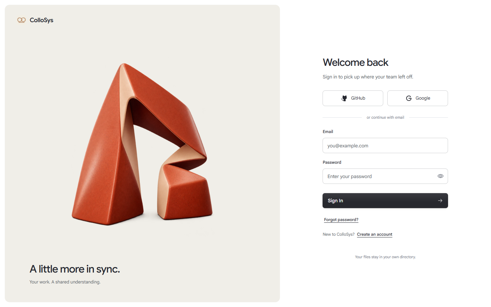
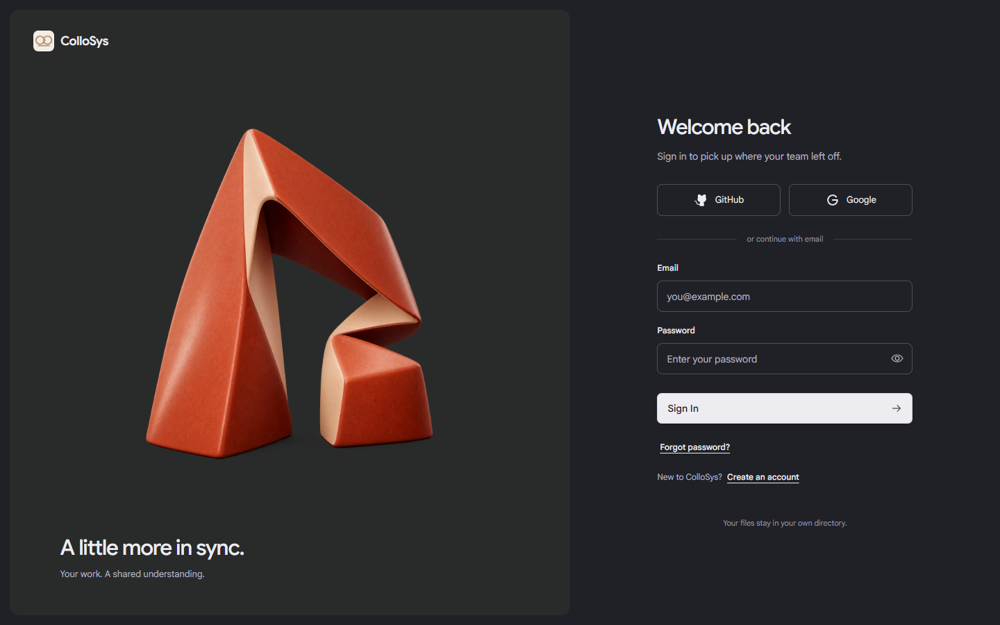
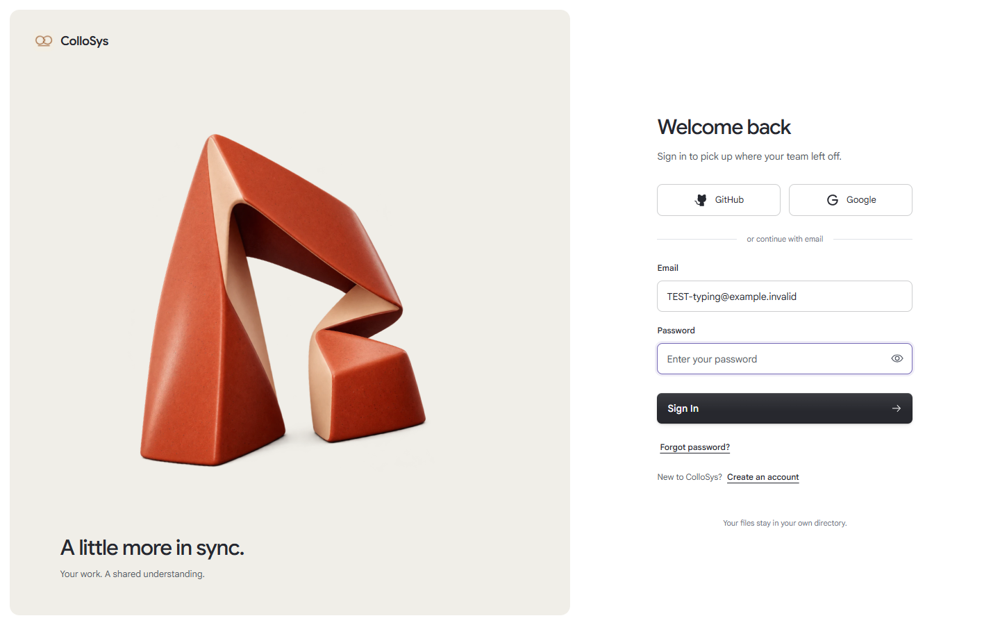
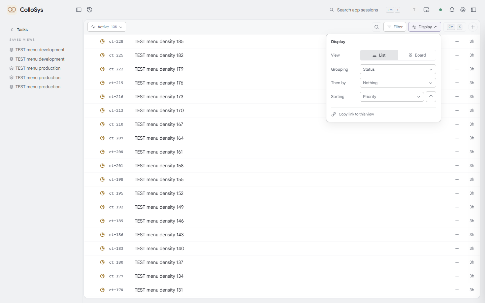
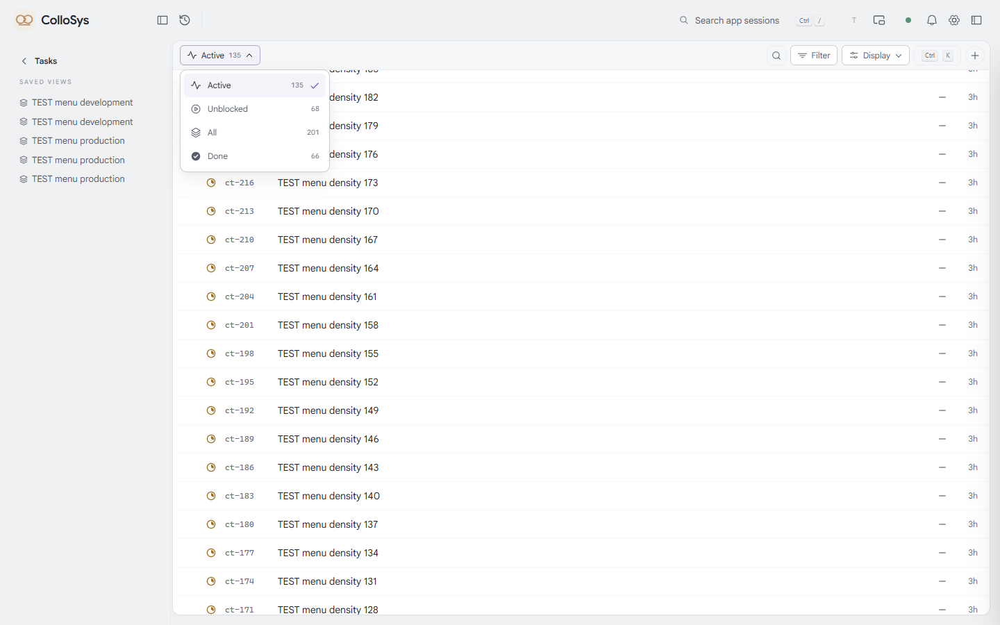
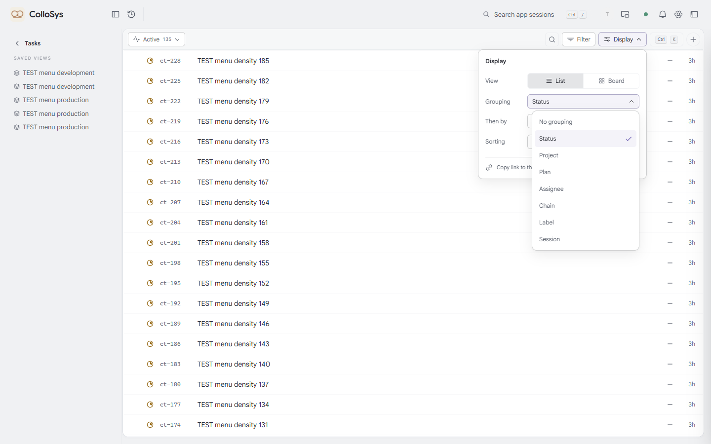
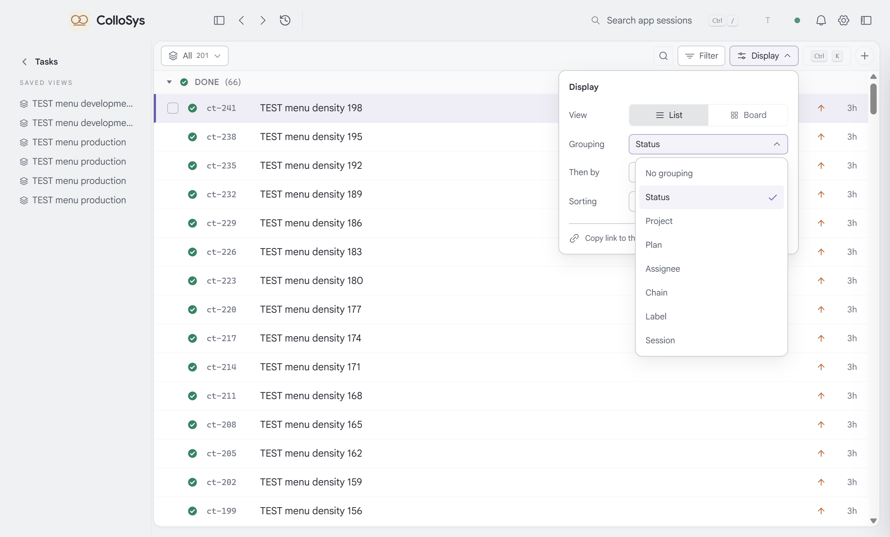
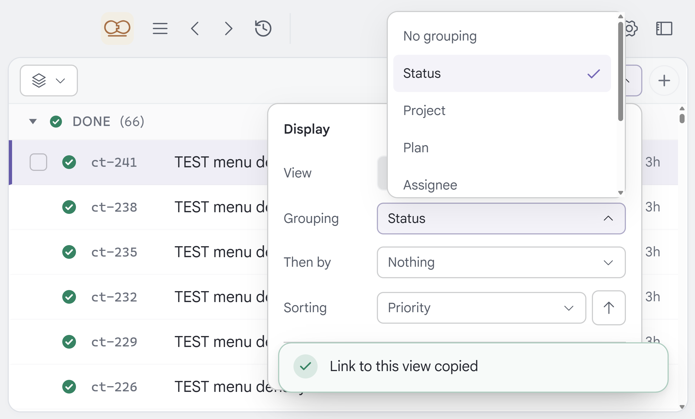

ColloSys · 真实菜单与登录视觉
这里是正式应用的运行证据索引。产品仍从仓库里的 npm start 打开独立桌面窗口。本页不承担应用功能，也不代表用户已经批准视觉方案。
登录 · 单一主体与安静表单

1440×900，真实表单与本地原创素材；静止构图。左侧近景。

深色完整页面。
密码聚焦只传递字段状态，不读取内容或长度。实际输入、提交、错误及恢复录像
邮箱提交来自真实请求，快速成功不会等待动画。失败请求状态日志 · 真实登录状态日志。OAuth 未配置；等待图仅为明确标注的开发组件状态预览。
Tasks · Active 与 Display

默认只展示当前配置。所有已有分组轴仍可通过子选择器访问。

预设、计数和当前值保留单选语义。
子菜单选择后父面板保持打开，Esc 分层关闭。真实连续操作录像
包含鼠标、键盘、快速重开、分组/排序、筛选、保存视图、低高度窗口和减少动态效果。逐项观察。
独立桌面窗口
原生窗口验证 100%、125%、150%、200% 页面缩放；系统显示缩放单独记录，不将两者混为一谈。最小化暂停与恢复也从真实窗口检查。

原生默认页面缩放。
原生 200% 页面缩放，仍能选择底部项。原生菜单数据 · 原生窗口、菜单与主题回归 · 连续性检查 · 默认桌面入口最终确认
性能与尚待验收项
前后分别保留 development / production 三轮结果。冷首次与重复操作分开；浏览器帧观察不等于物理显示延迟，自动化驱动耗时不当作点击延迟。变慢及未达约100ms目标的路径见集中执行记录。真实 GitHub/Google 授权仍待所有者配置后联调，视觉是否满意仍由用户判断。
生产菜单基线 · 生产菜单后测 · 开发菜单后测 · 重内容路径与阶段观察 · 密码显隐与实际错误计时